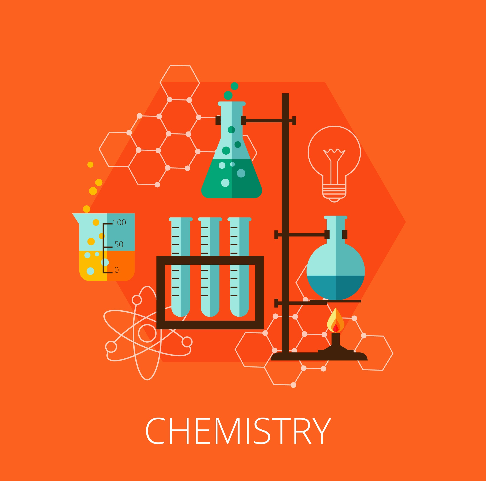
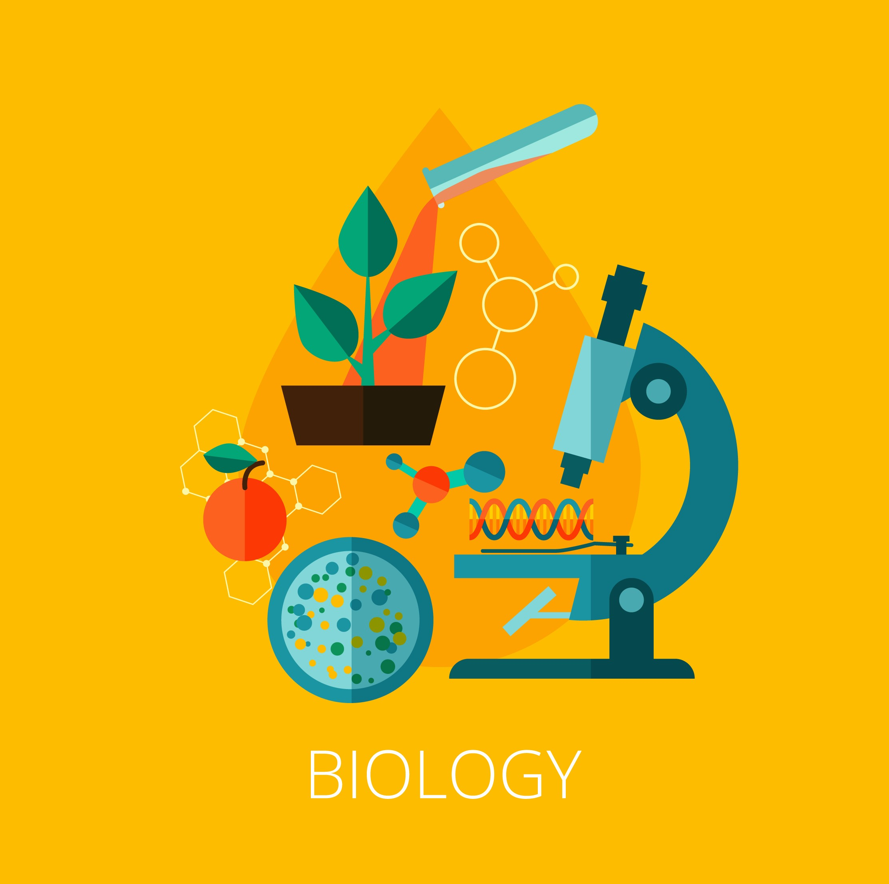

Materiais mais Acessados

Quimica

Biologia

O número de crianças e adolescentes fora da escola já chega a 263 milhões,ou seja, uma em cada cinco pessoas com até 17 anos não frequenta uma instituição de ensino. Quando paramos para analisar os locais onde isso acontece vemos que em países de baixa renda, a taxa de evasão de estudantes de 15 a 17 anos é de 59%, enquanto nos países ricos é de apenas 6%.
Esses dados mostram um claro problema vivido pela população mundial, por não dar condições mínimas para um indivíduo frequentar uma instituição de ensino. Gerando uma perda para o jovem no âmbito do conhecimento, mas também perde em outros aspectos como no social e entre outros, pois a escola é uma fase importante que dá uma formação básica para a vida da pessoa.
Sabendo que no Brasil também há uma enorme desigualdade no acesso a uma educação de qualidade, criamos essa plataforma para vocês criadores de conteúdos educacionais, poderem divulgar os materiais produzidos por vocês e para os visitantes que quiserem visualizar esse conteúdo de forma totalmente gratuita.
Saber maisProjeto desenvolvido por alunos do IFRJ Campus Rio de Janeiro, voltado pra o público infantojuvenil visando democratizar o acesso à química de uma maneira totalmente diferente do que é visto em sala de aula.
Conheça Mais
Visando combater esse problema a ONU colocou como uma de suas metas assegurar a educação inclusiva e equitativa e de qualidade, e promover oportunidades de aprendizagem ao longo da vida para todas e todos para tentar assegurar o acesso do ensino em todo o mundo de uma forma mais igualitária, para gerar uma maior democratização do ensino, vendo essa iniciativa, nós resolvemos criar essa plataforma para poder ajudar a nossa comunidade.
Nosso site visa democratizar o acesso ao conteúdo de qualidade para todos poderem usufruírem de maniera totalmente gratuita. Além disso a plataforma é uma forma de divulgação para diversos projetos educacionais ao redor do mundo para propagar seus conteúdos para todos os lugares.